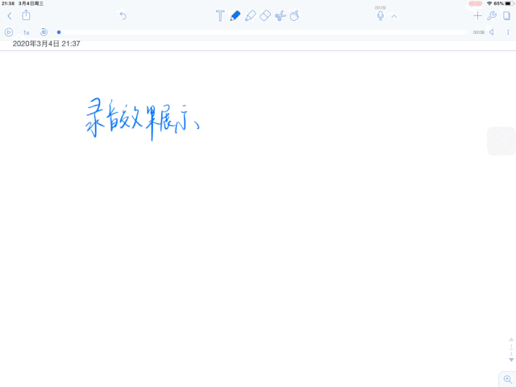
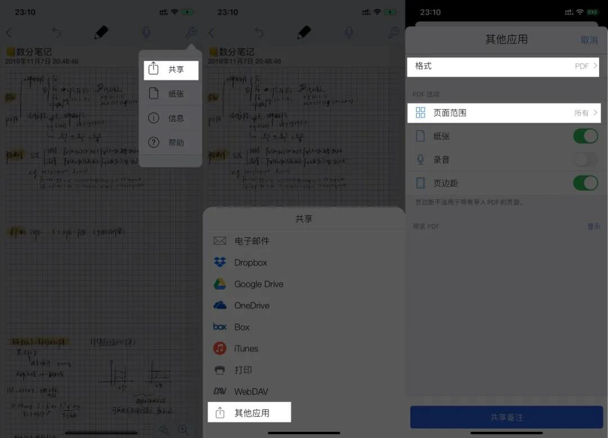
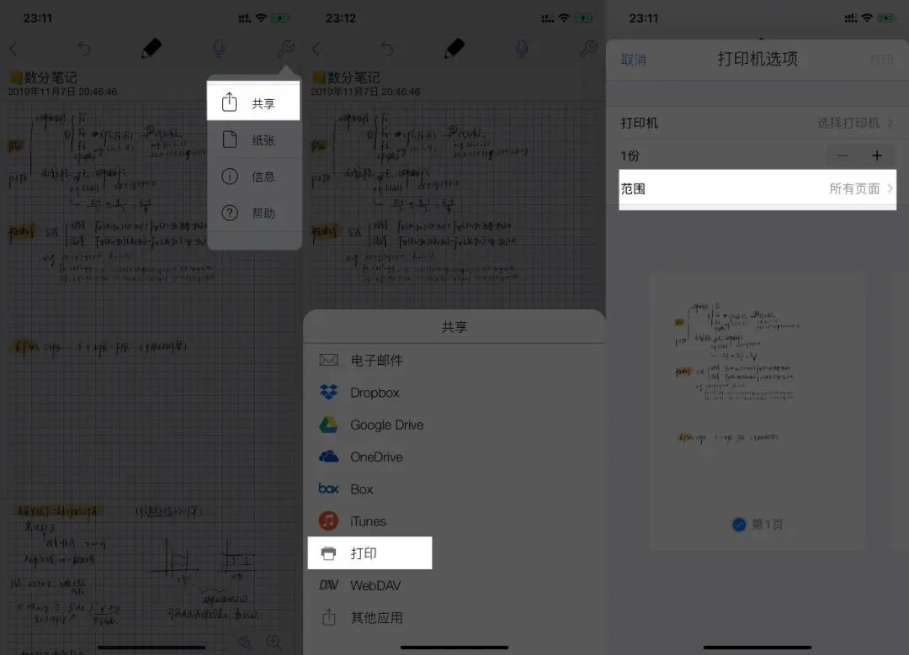

在需要的笔记上，第一页写好它的名称及用途，这样让你后续查看，只需要一瞥就能明白它的用途，进行笔记内分屏时也更方便。 能省下一秒就省一秒，不用打开笔记专门看它是什么。
搜索你的笔记，NB 的识别率还是比较准确的，当然了，它的英文准确度比中文更高。搜索也是电子笔记比传统笔记好的一点：可以搜索，从一堆笔记中找一个内容，搜索让这个过程更简单。 对了，如果是后续需要回溯的笔记，不要写的过于龙飞凤舞，不然你是很难搜索到的。
这点是 NB 的独家绝活，当你写笔记时，若想把讲话者的声音录下来，点击这个录音就行，事后还可以倍速播放，实为居家必备。 更厉害的是，当你录音时，如果你做了笔记，那当你听录音时，你在录音时的笔记会跟着录音回溯出来，完美回到当时的界面，记得噢，这里要打开录音下面的「备注重放」才会显示出来。
将你的课件放在左边，把你的笔记本放在右边，边看边整理笔记，能更好的进行笔记的归纳整理，模仿了传统做笔记的方式。
当你要和你的同伴分享笔记时，NB 让这个过程变得更简单。点击左上角的分享按钮，点击「其他应用」。 如果你的同伴有 NB，那你可以把格式设置为「备注」，这是 NB 的原生格式，ta 可以收到笔记后进行任意的更改；而如果 ta 没有 NB，你可以选择 PDF 或者 图片进行分享。 如果 ta 也是苹果设备，那你可以选择用 AirDrop，也就是「隔空投递」，最优雅的传输方式，记得打开 WiFi 再传递噢。
当你手写作业，你的老师让你上交纸质版时，你可以把笔记选择打印出来，用「打印」或者「其他应用」都可以，记得选择页面范围。 「打印」时，点击「打印备注」，然后可自选页面范围，之后双手放大页面，再点击右上角分享按钮；「其他应用」，自选页面范围的同时，可以可以设置纸张样式还有页边距。
